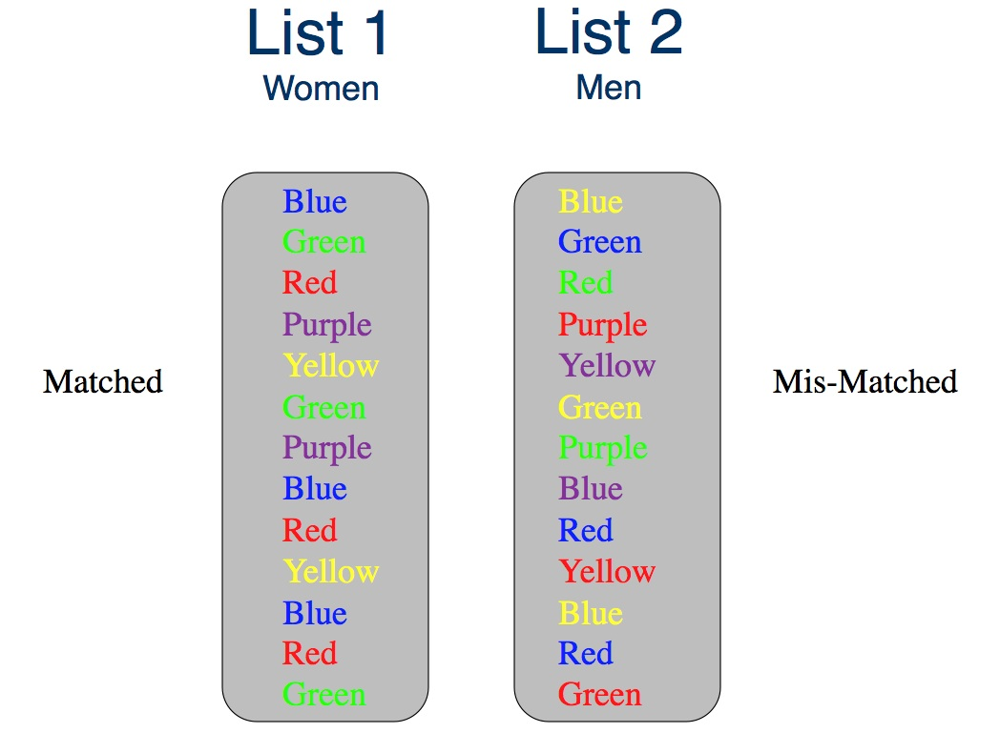
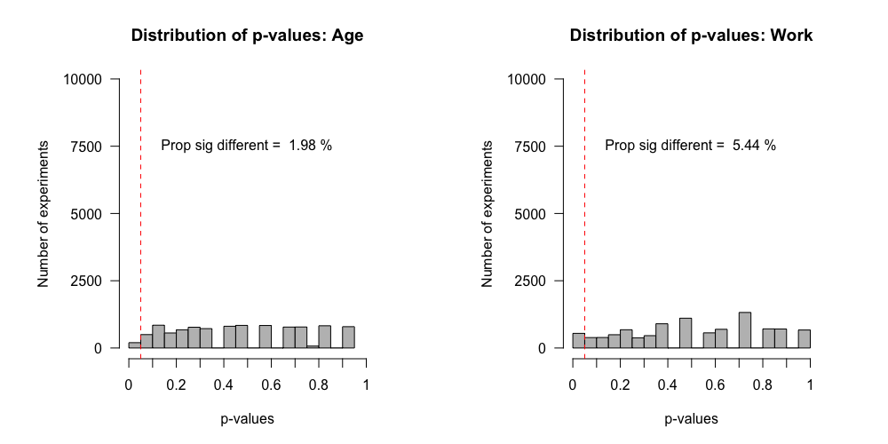
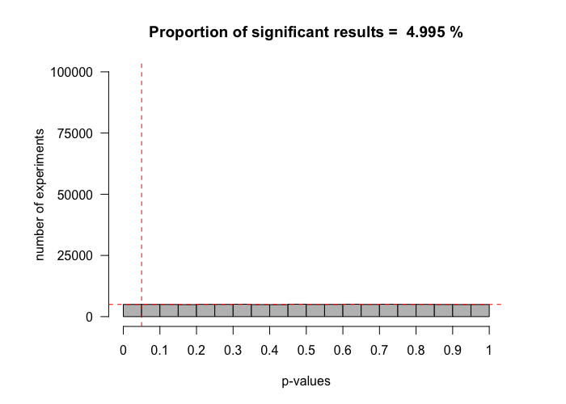
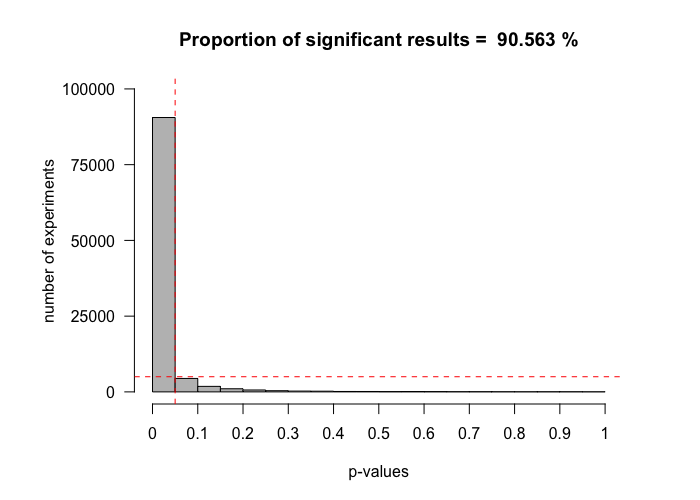
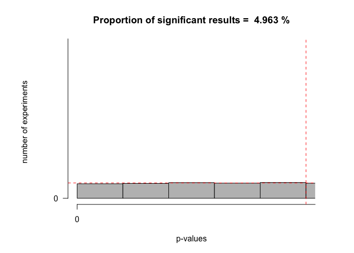
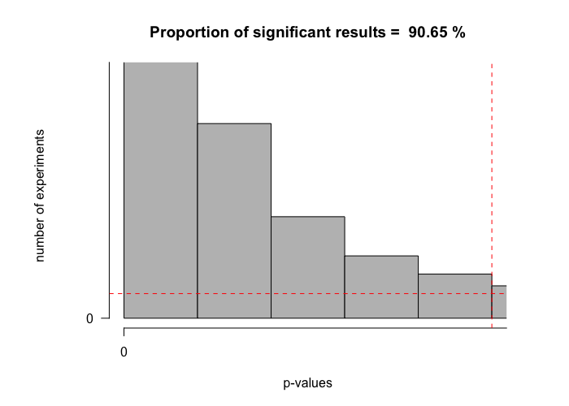
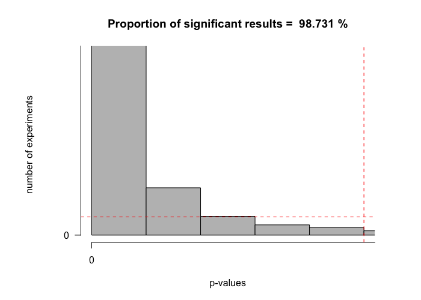

Week 7 lecture notes - PSYC 5301
Review of Questions from Week 6
Why is randomization necessary in order to infer a causal relationship from an experiment?
Student responses:
- (CB) prevents individual differences from being "unequally skewed"
- (KL) eliminates differences between individuals in a sample
- (MD) isolates confounds
- (JH) eliminates bias (what kind of bias)?
- (HH) reduce unknown variables from influencing outcomes
- (DU) differences between groups are likely due to experiment procedures
- (SH) participants have equal chance of being assigned to a group
- (KS) varies types of people in each condition
- (MR) removes the need for control of individual differences
Confounds: a class demo
- divide room into two groups (male and female is best)
- Females given Stroop task with no interference…measure time
- Males given Stroop task with interference…measure time
- Who wins? Does that mean males/females have better attentional focus?

The problem with our inference in this experiment is that one variable (color/word interference) is perfectly correlated with another (gender). This is called a confound, and it is a threat to internal validity.
The goal in any experimental design is to minimize confounds.
Types of confounds (and solutions):
- Group differences (solution: use random assignment)
- Order/testing effects (solution: use counterbalancing)
- experimenter bias (solution: use blinding)
Aside: does randomization REALLY remove individual differences?
R demo: open residenceData.R
This script loads a data file of 26 individuals measured on various characteristics (e.g., age, # hours work per week).
The script does the following:
- randomly select half of the individuals and assign them to Group A
- other half is assigned to Group B
- Age and Work are supposed to be individual differences. Random assignment to Groups A and B should remove the individual differences..that is, Groups A and B should be equivalent with respect to Age and Work
- test this claim via an independent samples t-test..what do we see?
- let's simulate this process 10,000 times. How often are the two groups equivalent? How often are they different?

You report p=0.045 with a high powered experiment. One of your committee members counters that your obtained p-value actually lends more evidence for the null than the alternative. How do you respond?
Student responses:
- 5 agreed
- 3 expected smaller p-value
- 1 expected smaller p-value, but supported "decision" to reject
- 1 said 95% power –> should expect large effect
- 4 disagreed
- 2 correctly said 5% Type II error rate, but based decision to reject on this (incorrect)
- 1 said "p < 0.05, so reject"
- 1 said "have confidence that alternative is true" (what does this mean?)
Let's investigate this!
Open pValues-lindley.R. This is our usual simulation of sampling IQ scores then comparing our sample to hypothesized mean of 100. Each run of the script generates 100,000 p-values and plots the resulting distribution.
Start with M=100. This simulates H0=true. What do we noticed about p-value distribution? 
Change M to 107. This simulates H1=true with a specific effect size. What do we notice? 
Clearly we have a lot of power. Let's zoom in a bit on the "significant" p-values (below 0.05). First, we'll make the following changes:
- M=100 (back to H0=true)
- bars = 100
- ylim = c(0,nSims/10)
This is essentially the same uniform distribution as above, but this time, we have one bar for p-values between 0 and 0.01, 0.01 and 0.02, etc.

Now, lets zoom in a bit on the "significance zone" between p=0 and p=0.05. Change xlim to c(0,0.05). Notice the red horizontal line..this tells us what proportion of p-values we should expect when there is NO effect.

Let's go back to the situation where we have a lot of power. Change M to 107. Which p-values are the most frequent? Which are LEAST frequent?

Let's get even more power…change to M = 109.

Specifically, look at the p-values between 0.04 and 0.05. The red line shows how often we can expect them when HO is true. Notice that we can expect them EVEN LESS OFTEN when H0 is false!
Said another way: p=0.045 is surprising when there is no effect. p=0.045 is EVEN MORE SURPRSING when there IS an effect! What???
This is known as Lindley's Paradox, and it is an example of when frequentist and Bayesian approaches differ in their conclusions:
- frequentist decision: reject H0 (since p<0.05)
- Bayesian decision: accept HO, since p=0.045 is twice as likely under HO as it is under H1.
Of course, this only seems to happens when power is extremely high (well above 90%). So what about "marginal" p-values in lower power situations?
Open pValues-likelihoods.R. This script replicates our calculations above 100,000 times, counting the proportion of "marginal" p-values obtained at varying levels of power (ranging from 0.1 to 0.99). Further, it transforms these proportions to likelihood ratios (alternative to null and null to alternative).

As you can see, the "relative likelihood" of the alternative over the null maxes at 4. Thus, in the best case scenario, a p-value of 0.045 is only 4 times more likely under H1 than it is under H0. Is this "evidence" for an effect?